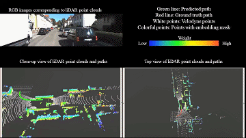
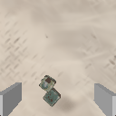

Semantic SLAM
SNI-SLAM and SNI-SLAM++
Semantic mapping and 3D scene reconstruction using neural implicit representations.

Research
From robot vision and world models to physically grounded action.
Research at PIRLab
Our work connects perception, prediction and action to help robots understand and interact with the physical world.
Geometry, mapping, localization and motion understanding.
Explore projects PredictionLearning how dynamic scenes and objects evolve.
Explore projects ActionRobot manipulation, embodied learning and control.
Explore projectsCurrent work
Perception
Methods for building spatial understanding from images, LiDAR and 3D observations.
Semantic SLAM
Semantic mapping and 3D scene reconstruction using neural implicit representations.

LiDAR odometry
Learning-based odometry from 3D point clouds.


Prediction
Predicting motion and scene dynamics to support robot decisions.
Flow world model
A lightweight flow world model predicts motion to guide robot manipulation.
3D scene flow
3D motion estimation with auto-labelling and diffusion-based refinement.

Action
Learning and transferring skills for contact-rich robot manipulation.
Continual VLA
Continual learning for robot manipulation across tasks and skills.
Vision–Sound–Language–Action
Sound-aware manipulation that lets robots respond to acoustic events.
Real-to-sim-to-real
Gaussian splatting connects simulation and reality for robot manipulation learning.
